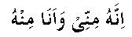
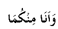

The neglect of Nabi (Sallallahu Alayhi Wasallam) orders changed the victory at Uhud into a temporary defeat, the details of which we have already seen in Chapter I. That was a very hard time for the Muslims. They were simply caught between the two groups of the enemy and many were killed. Nabi (Sallallahu Alayhi Wasallam) himself was surrounded by the enemy, who spread the rumour that he had died. Most of the Sahaabah (RA) lost their senses at this rumour and that was the main cause of their confusion.
Hadhrat Ali (RA) says: “We were surrounded by the enemy and I could not see Nabi (Sallallahu Alayhi Wasallam). I first searched for him among the living and then among the dead, but I could not find him. I said to myself that, ‘It is impossible for him to run away from the battle-field. It seems that Allah Ta’ala is angry with us due to our sins and he has raised him up to the heavens. There is no way left for me except to jump into the enemy lines and fight till I am killed.’ I therefore attacked the enemy, clearing them with my sword, till I caught sight of Nabi (Sallallahu Alayhi Wasallam). I was very happy and was sure that Allah Ta’ala had been protecting him through His Malaaikah. I approached him and stood by his side. Meanwhile a group of the enemy advanced to attack Nabi (Sallallahu Alayhi Wasallam). He said to me, ‘Ali go and stop them.’ I fought and drove them away single-handed, killing quite a few of them. After this, yet another group came to attack him. He again called out, ‘Ali go and stop them.’ I fought with that group again single handed and put them to their heels.”
It was on this occasion that Hadhrat Jibraeel ^ came and praised Hadhrat Ali (RA) for his bravery and his devotion to Nabi (Sallallahu Alayhi Wasallam). Nabi (Sallallahu Alayhi Wasallam) said:

“Ali belongs to me and I belong to him.” At this, Hadhrat Jibraeel ^ remarked:

“I belong to you both.”
Look at the bravery of Hadhrat Ali (RA). When he is unable to find Nabi (Sallallahu Alayhi Wasallam), he jumps into the enemy lines single-handed. This shows his extreme love and devotion to Nabi (Sallallahu Alayhi Wasallam).